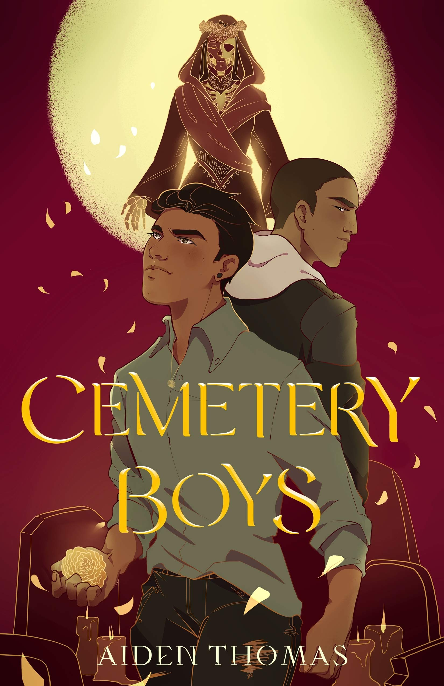

Diversify Your Bookshelves
Hello fellow readers and welcome to my site! After looking at my and others bookshelves I have realized there is a severe lack of diversity. I wanted to create this website to help showcase diverse books and diverse authors. I'm only one person so I can't have every book ever but I will highlight some fan favorites and my personal favorites. I hope this site can help you discover some new stories and find more resources about why it's important to read diverse stories. Also, for now this site is going to cover mostly young and new adult books but that may change in the future. Thanks for checking out my site!
Listen to authors talk about why reading diverse stories is important!